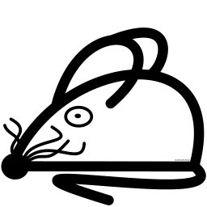

Last Published: 2024-03-12
|
Version: 1.1.0
Martin Helwig
Overview
Introduction
Download
Release Notes
Project Documentation
Project Information
Project Reports

Sitemap
This page lists all entries of the navigation menu in expanded form.
Overview
Introduction
Download
Release Notes
Project Documentation
Project Information
CI Management
Dependencies
Dependency Information
Distribution Management
About
Issue Management
Licenses
Plugin Management
Plugins
Source Code Management
Summary
Team
Project Reports
Javadoc
Test Javadoc
Surefire
dependency-check
JaCoCo
Checkstyle
Source Xref
Test Source Xref